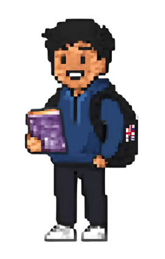
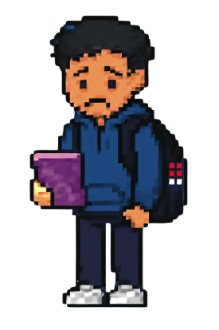

Two types of mentees, high level

01
Motivated student
Their behaviourAttempts everything you ask them to.
What a good mentor would doGive them tasks every week, so the progress runs at their pace.

02
Looks ambitious but does not attempt the work
Their behaviourAgrees to everything on the call, then usually does not get much work done.
Why they behave that wayThe task feels too difficult, so they procrastinate.
What a good mentor would doComplete the first few steps with them in the session. If they prefer it, do more handholding and finish the task with them during the session.
Some mentees would rather pay to be walked through the work than do it alone. Give them that without making them feel judged for it.
Specific mentee personalities and how to deal with them
Check these two things before you decide a mentee is difficult
- The match. Are you actually in the seat they want? If their target is narrow and outside your lane, say so and tell Fidel.
- The promise. Ask what they were told at the consultation. And if it is completely different from what you can offer, raise it to Fidel.
01
Rather yap than work
Their behaviourEnjoys conversations with mentors, but offers little progress in terms of work done.
Why they behave that wayEnjoys the feeling of being productive if they do a session.
What a good mentor would doGo along with the conversations, and still handhold them to at least finish one task.
02
Defensive and unwilling to listen to advice
Their behaviourVery fixated on a certain path or job, and cannot afford to be that specific, because as a candidate they are not the best of the best.
Why they behave that wayThere is a reason underneath their strong preference.
What a good mentor would doHave an honest chat to understand their motivations, what they like, and why the preference is so strong. Use their past experience to explain why focusing on one niche is not enough in the Australian market.
Keep the session frequency up. These usually go wrong when the sessions quietly stop.
03
Wants a direct roadmap, with no fluff
Their behaviourWants specific tricks and tips to follow.
Why they behave that wayPrefers being transactional and does not like fluff.
What a good mentor would doGive them more practical strategies through our Mentor Resource Hub.
04
Good candidate but unconfident
Their behaviourHas good, relevant experience but did not know it was relevant.
Why they behave that wayPrevious job searching failures.
What a good mentor would doTell them they are actually good enough, from someone like yourself who already has the credibility.
Flag it to Fidel when
- Three sessions in a row produce nothing, even when you built it with them on the call.
- They want something outside your lane.
- A mentee has become a drain on you.
- Someone is heading for a bad outcome and is likely to blame the service.
Flag early. Nobody is judged on a mentee who did not do the work.